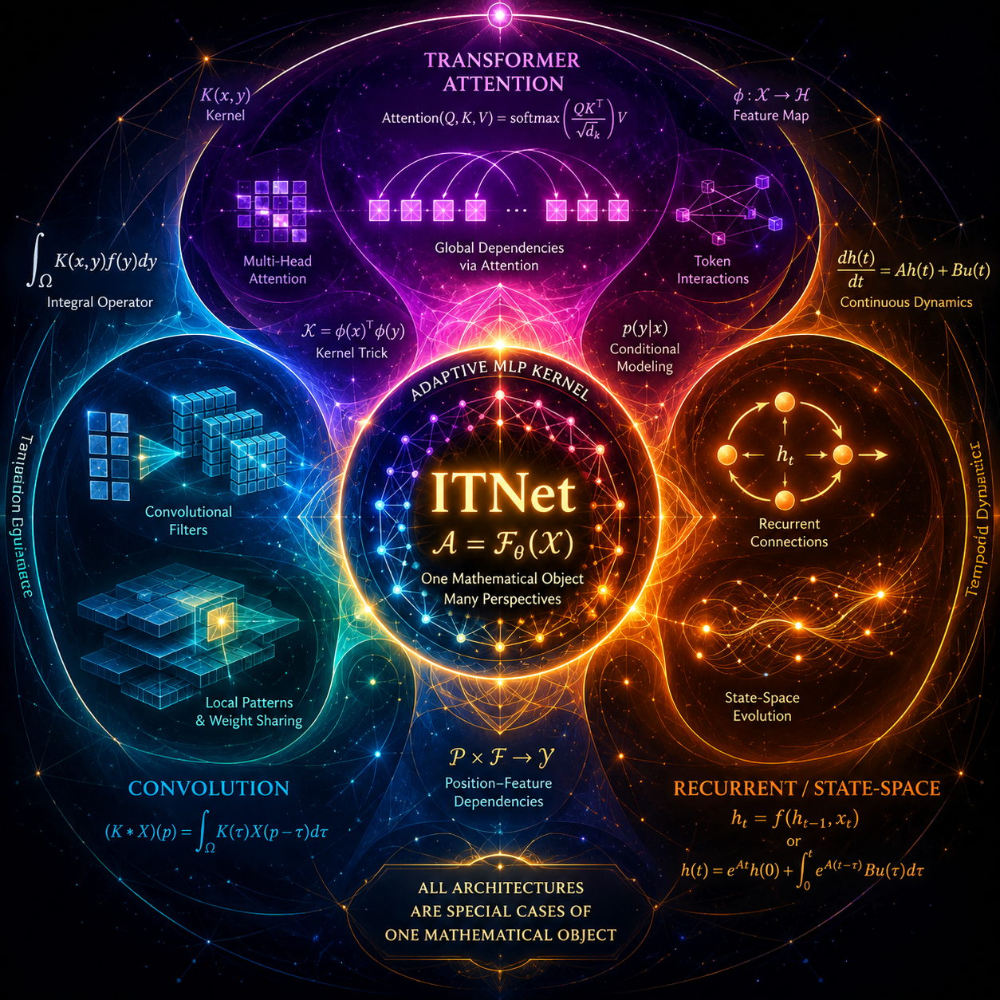

For ten years, the AI industry has fought a religious war. Convolutional networks for vision. Transformers for language. Recurrent networks and state-space models for sequences. Each camp had its priests, its benchmarks, and its conferences. Each claimed its architecture was fundamentally different, specially suited to its domain, impossible to replace.
They were all wrong.
A paper published this week proves that convolution, self-attention, and recurrence are not different architectures. They are special cases of the same mathematical object, a learnable integral transform. The authors built a single architecture called ITNet, short for Integral Transform Network, and matched or exceeded specialized baselines on ImageNet-1K, GLUE, ModelNet40, and VQA v2. One model. Four domains. Four victories.
The model wars are over because they were always the same war.
The Math That Unifies Everything
ITNet is built around a single idea that sounds almost insulting in its simplicity. Instead of hardcoding convolutional filters, attention heads, or recurrent gates, ITNet learns a kernel, implemented as a small MLP, that depends jointly on positions and features. This kernel models pairwise interactions adaptively from data. Where a convolution says "use this fixed filter everywhere," where attention says "compare every token to every other token," and where a recurrent cell says "pass a hidden state forward in time," ITNet says "learn the interaction function itself and let the data decide what kind of operation it becomes."
The authors prove, rigorously, that convolution, self-attention including multi-head variants, and autoregressive recurrence including LSTM, GRU, S4, and Mamba, all arise as special cases of ITNet under appropriate parameterizations. They also prove that ITNet is a universal approximator of continuous operators. This is not a loose analogy or a philosophical claim. It is a mathematical theorem with a constructive proof.
Making this practical required three computational innovations. Tiled kernel fusion keeps memory access patterns efficient. Importance-weighted Monte Carlo integration lets the model sample interactions strategically rather than exhaustively. Learned low-rank factorization compresses the kernel representation without losing expressiveness. The result is not a theoretical curiosity. It is a working architecture that beats specialists at their own games.
The implication is uncomfortable. We have spent a decade treating CNNs, transformers, and RNNs as separate species when they were always breeds of the same animal. The differences were implementation details, not mathematical fundamentals.
The Specialists Lose to the Generalist
The ITNet results are not marginal. On ImageNet-1K, the standard vision benchmark, ITNet matched or exceeded convolutional baselines. On GLUE, the standard NLP benchmark, it did the same against transformer baselines. On ModelNet40, a 3D point cloud classification task, it beat architectures specifically designed for sparse geometric data. On VQA v2, a visual reasoning benchmark that requires combining language and vision, it surpassed multi-modal specialists.

These are not similar domains. Vision, language, 3D geometry, and visual reasoning use fundamentally different input structures, sequence lengths, and pattern types. The fact that one architecture can dominate across all of them suggests something profound: the architectural fragmentation in deep learning may be unnecessary. We have been arguing about which flavor of the same thing is better, not about which thing is the right thing.
This challenges the entire industry of architecture search, neural architecture search, and modality-specific model design. If one kernel can become a CNN, a transformer, or an RNN depending on how you parameterize it, then searching for new architectures is not invention. It is interpolation between points on a manifold that was already fully described.
Diffusion Language Models and the Inference-Time Revolution
The ITNet paper is not the only one pushing this message from a different angle. A separate paper on Diffusion Language Models, published the same day, evaluated eight DLMs across eight benchmarks and reached a striking conclusion: no single diffusion paradigm dominates across all tasks.
Pure diffusion models like Dream excel at globally constrained reasoning. Dream scored 75 percent on Sudoku, far surpassing autoregressive models on a task that requires satisfying multiple global constraints simultaneously. Block-based architectures like Fast-dLLM achieve superior math reasoning, 83.39 percent on GSM8K, and code generation, 69.51 percent on HumanEval, but trade off linguistic fluency.
The computational disparity is staggering. Pure diffusion requires 23 to 25 teraflops per forward pass, but full generation balloons to over 25,000 teraflops because of iterative refinement. Block-diffusion architectures like Fast-dLLM cut this to just 33 teraflops. That is over a 700-fold reduction.
This means generation-time design choices, steps, block size, unmasking strategy, matter as much as the architecture itself. The quality-efficiency trade-off in diffusion models is not fixed at training time. It is configurable at inference time. You do not need a different model for each task. You need a different generation strategy for the same model.
This reinforces the ITNet thesis from the opposite direction. The action is shifting from architecture invention to inference-time optimization. The building block matters less than how you use it.
Subquadratic and the Cost Curve That Is Not Real
The math proves unity, but the market is still chasing raw efficiency. The industry remains desperate to break the quadratic cost of attention that makes transformers prohibitively expensive at long context. This week, a Miami startup called Subquadratic emerged from stealth claiming to have solved exactly this bottleneck.
Subquadratic's SubQ model claims 12 times more context length than dense attention, 56 times faster than FlashAttention, and 89.7 percent on LiveCodeBench. CEO Justin Dangel claimed it costs eight dollars to run on Nvidia's benchmark versus 2,600 dollars for Claude Opus 4.6.
Skeptics immediately noted that SubQ reused Qwen weights rather than training from scratch, raising questions about how much of the claimed improvement comes from the architecture versus the base model. Some researchers have called it "AI Theranos." Others are waiting for open weights and independent replication before drawing conclusions.
Whether SubQ is legitimate or not, the story matters because it shows the industry is desperate for the exact breakthrough that ITNet's math suggests is possible. If attention is just one parameterization of a learnable integral transform, then the quadratic cost is not a law of nature. It is a property of one specific parameter setting. The race to break the attention bottleneck is heating up because the people running it sense, correctly, that there is a deeper mathematical structure waiting to be exploited.
The attention bottleneck is real. The race to break it is real. ITNet suggests the finish line may be closer than the racers think.
Multi-Agent Deliberation as Dynamical Systems
This underlying structural reality extends beyond single models and cost curves into multi-agent orchestration. The Hidden Anchors paper, also published this week, proves that latent math dictates behavior even when models talk to each other. It models multi-agent LLM deliberation, where agents exchange and revise answers over multiple rounds, as a closed-loop dynamical system.
The key finding is that each agent carries a hidden internal belief, which the authors call an "anchor," that continually pulls its opinion regardless of what its neighbors say.
This anchor explains a behavior that classical consensus models structurally forbid. An agent's confidence in the correct answer can escape the convex hull formed by the group's initial beliefs, climbing past where any individual agent started. The anchor acts like a hidden spring, constantly tugging the agent back toward its internal prior.
Testing three open-weight model families, Llama-3.1-70B, Qwen3-32B, and gpt-oss-20b, the authors found anchor gain measured at approximately 0.34 across all three. But the models differ dramatically in where the anchor sits. Llama's recovered anchors lie far outside the initial opinion band in 92 percent of runs, driving what the authors call hull-escaping dynamics. Gpt-oss-20b's anchors coincide with initial opinions, reducing to essentially classical Friedkin-Johnsen consensus behavior.
The same mechanism produces qualitatively different behavior depending on where the anchor sits. This means deliberation dynamics are family-dependent and governed by latent priors, not just prompt design. You cannot fix a multi-agent discussion by rewriting the system prompt if the underlying model has an anchor that sits outside the opinion space you are trying to explore.
Like ITNet and the diffusion paper, Hidden Anchors suggests that what looks like architectural diversity is actually variation along a continuous spectrum. The anchor is always there. Its location is what changes.
What This Means for Practitioners
If ITNet is right, and the math says it is, your next model selection should prioritize inference-time flexibility over architecture tribalism. The question is not "should I use a CNN or a transformer?" The question is "how do I parameterize the kernel so it behaves like what I need?" That is an engineering decision, not a religious one.
The 700-fold TFLOPS gap in diffusion models means generation-time configuration is now a first-class engineering concern, not an afterthought. Your deployment strategy matters as much as your training strategy. The same model can be 700 times more expensive or 700 times cheaper depending on how you generate from it.
Multi-agent systems need anchor analysis, not just prompt tuning. Before you deploy a panel of agents to deliberate, you need to know where their anchors sit. An agent with an external anchor will escape the consensus hull. An agent with an internal anchor will converge. Both behaviors are predictable if you measure the anchor first.
The era of "transformers for NLP, CNNs for vision, RNNs for sequences" is ending. The next wave of AI architecture innovation will not come from inventing new building blocks. It will come from understanding the unified mathematics behind existing ones and learning to navigate the parameter space that separates them.
The Close
We spent a decade arguing about which architecture wins. The answer is none of them, and all of them. The math was always the same. The only question is whether you are still paying for modality-specific infrastructure when the underlying operator never changed.
How much of your stack is built on a distinction that just evaporated?
Get More Articles Like This
Getting your AI infrastructure right is just the start. I'm documenting every breakthrough, fix, and lesson learned as I build PhantomByte.
Subscribe to receive updates when we publish new content. No spam, just real analysis from the trenches.
Build Real AI Infrastructure
PhantomByte teaches you to build real AI infrastructure yourself: local AI stacks, autonomous agents, multi-agent orchestration, web scraping, and custom tools. Step-by-step PDF tutorials you download, follow, and deploy. No subscriptions. No fluff. Just skills that ship.